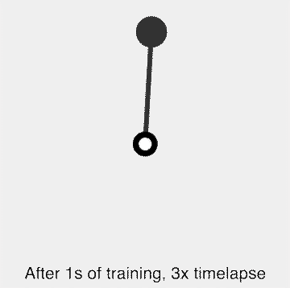

Deep Reinforcement Learning#

In this chapter we use the previously demonstrated deep learning capabilities of RLtools in combination with a (inverted) pendulum simulator that is equivalent to the Pendulum-v1 in gym/gymnasium to train a swing-up control policy. For the training, we use the TD3 off-policy, deep-RL algorithm. TD3 and required supporting data structures and algorithms are integrated in RLtools.

Note that the training time in the animation refers to bare metal training, not using the Cling interpreter like these notebooks do. As you can see from the training later on even when dispatching to a BLAS library, Cling is much slower than optimized, bare-metal code. See the repository https://github.com/rl-tools/rl-tools for more information on how to run the training directly on your hardware. You can also try the WASM based training in your browser at https://rl.tools.
First, as beforehand we include the necessary primitive operations (dispatching matrix multiplications to OpenBLAS). We also use the neural network operations (dense layer forward and backward pass) that take advantage of OpenBLAS through the nn/operations_cpu_mux.h multiplexer. The accelerated forward and backward pass are automatically used if the higher level operations (forward/backward pass on the full model) are called with the OpenBLAS device (coming from the DEVICE_FACTORY). To
make the accelerated routines available to the higher-level functions, nn_models/operations_cpu.h has to be included after nn/operations_cpu_mux.h.
The pendulum environment is implemented in pure C++ without dependencies, hence it contains only generic operations and can be included by the collective rl/environments/operations_generic.h that includes all generic functions of all available environments.
For TD3 and all its related data structures and algorithms we just need to include rl/operations_generic.h because all the operations are higher-level and dispatch to the lower-level primitives imported beforehand. The RL operations call functions to interact with the environment as well as perform forward and backward passes on the neural network model which in turn calls the dense layer operations.
We also include the Xeus UI for the pendulum (to be rendered in the notebook when it is run live). Furthermore, we include rl/utils/evaluation.h so that we can easily execute deterministic rollouts (without exploration noise) and get average rewards in fixed intervals to monitor the training progress. The evaluation function can also take the UI as an input and render a live animation of the pendulum.
[1]:
#define RL_TOOLS_BACKEND_ENABLE_OPENBLAS
#include <rl_tools/operations/cpu_mux.h>
#include <rl_tools/nn/optimizers/adam/instance/operations_generic.h>
#include <rl_tools/nn/operations_cpu_mux.h>
#include <rl_tools/rl/environments/pendulum/operations_generic.h>
#include <rl_tools/nn_models/mlp/operations_generic.h>
#include <rl_tools/nn_models/sequential/operations_generic.h>
#include <rl_tools/nn_models/random_uniform/operations_generic.h>
#include <rl_tools/nn/optimizers/adam/operations_generic.h>
#include <rl_tools/rl/algorithms/td3/operations_generic.h>
#include <rl_tools/rl/components/off_policy_runner/operations_generic.h>
#include <rl_tools/rl/environments/pendulum/ui_xeus.h>
#include <rl_tools/rl/utils/evaluation/operations_generic.h>
namespace rlt = rl_tools;
#pragma cling load("openblas")
We set up the major types like before again. float is usually much faster while still being sufficient for deep and reinforcement learning. You can try switching to double and re-run the notebook to see the difference in training time.
[2]:
using T = float;
using TYPE_POLICY = rlt::numeric_types::Policy<T>;
using DEVICE = rlt::devices::DEVICE_FACTORY<rlt::devices::DefaultCPUSpecification>;
using RNG = DEVICE::SPEC::RANDOM::ENGINE<>;
using TI = typename DEVICE::index_t;
Next, we define the ENVIRONMENT type which acts as a compile-time interface between simulations and RL algorithms. In RLtools environments share a common interface that is similar to the gym/gymnasium interface but e.g. has the observation and state dimensionality as compile-time constants so that the compiler can maximally optimize each part of the code. The RL algorithms and the following training procedure are agnostic to the type of environment used as long as exposes the
required interface.
[3]:
using ENVIRONMENT_PARAMETERS = rlt::rl::environments::pendulum::DefaultParameters<T>;
using ENVIRONMENT_SPEC = rlt::rl::environments::pendulum::Specification<T, TI, ENVIRONMENT_PARAMETERS>;
using ENVIRONMENT = rlt::rl::environments::Pendulum<ENVIRONMENT_SPEC>;
Next we define some hyperparameters to train the pendulum swing-up. Note the very low STEP_LIMIT which is tribute to TD3 being relatively sample efficient (e.g. in comparison to PPO):
[4]:
struct TD3_PENDULUM_PARAMETERS: rlt::rl::algorithms::td3::DefaultParameters<TYPE_POLICY, TI>{
static constexpr TI CRITIC_BATCH_SIZE = 100;
static constexpr TI ACTOR_BATCH_SIZE = 100;
};
constexpr TI STEP_LIMIT = 10000;
constexpr TI REPLAY_BUFFER_CAP = STEP_LIMIT;
constexpr int N_WARMUP_STEPS = TD3_PENDULUM_PARAMETERS::ACTOR_BATCH_SIZE;
constexpr TI EPISODE_STEP_LIMIT = 200;
constexpr TI ACTOR_NUM_LAYERS = 3;
constexpr TI ACTOR_HIDDEN_DIM = 64;
constexpr TI CRITIC_NUM_LAYERS = 3;
constexpr TI CRITIC_HIDDEN_DIM = 64;
constexpr auto ACTOR_ACTIVATION_FUNCTION = rlt::nn::activation_functions::RELU;
constexpr auto CRITIC_ACTIVATION_FUNCTION = rlt::nn::activation_functions::RELU;
constexpr auto ACTOR_ACTIVATION_FUNCTION_OUTPUT = rlt::nn::activation_functions::TANH;
constexpr auto CRITIC_ACTIVATION_FUNCTION_OUTPUT = rlt::nn::activation_functions::IDENTITY;
using TD3_PARAMETERS = TD3_PENDULUM_PARAMETERS;
In the following these hyperparameters are used to set up the actor and critic types and combine them into a combined actor-critic type that is used in the TD3 implementation. Furthermore, we are defining an off-policy runner type that contains a replay buffer and interacts with the environment. Initially, we were hiding this complexity in the actor critic structure but we found that exposing it is beneficial because the user has more agency and can swap out parts more easily. For example the
actor and critic network types can be any type for which a rlt::forward and rlt::backward operation exist (these functions should be included before the RL operations like described above).
[5]:
using ACTOR_INPUT_SHAPE = rlt::tensor::Shape<TI, 1, TD3_PARAMETERS::ACTOR_BATCH_SIZE, ENVIRONMENT::Observation::DIM>;
using CRITIC_INPUT_SHAPE = rlt::tensor::Shape<TI, 1, TD3_PARAMETERS::CRITIC_BATCH_SIZE, ENVIRONMENT::Observation::DIM + ENVIRONMENT::ACTION_DIM>;
using ACTOR_CONFIG = rlt::nn_models::mlp::Configuration<TYPE_POLICY, TI, ENVIRONMENT::ACTION_DIM, ACTOR_NUM_LAYERS, ACTOR_HIDDEN_DIM, ACTOR_ACTIVATION_FUNCTION, ACTOR_ACTIVATION_FUNCTION_OUTPUT>;
using CRITIC_CONFIG = rlt::nn_models::mlp::Configuration<TYPE_POLICY, TI, 1, CRITIC_NUM_LAYERS, CRITIC_HIDDEN_DIM, CRITIC_ACTIVATION_FUNCTION, CRITIC_ACTIVATION_FUNCTION_OUTPUT>;
using OPTIMIZER_SPEC = typename rlt::nn::optimizers::adam::Specification<TYPE_POLICY, TI>;
using PARAMETER_TYPE = rlt::nn::parameters::Adam;
using CAPABILITY_ACTOR = rl_tools::nn::capability::Gradient<PARAMETER_TYPE>;
using CAPABILITY_CRITIC = rl_tools::nn::capability::Gradient<PARAMETER_TYPE>;
using CAPABILITY_TARGET = rl_tools::nn::capability::Forward<>;
using OPTIMIZER = rlt::nn::optimizers::Adam<OPTIMIZER_SPEC>;
using ACTOR_TYPE = rlt::nn_models::mlp::Build<ACTOR_CONFIG, CAPABILITY_ACTOR, ACTOR_INPUT_SHAPE>;
using ACTOR_TARGET_TYPE = rl_tools::nn_models::mlp::NeuralNetwork<ACTOR_CONFIG, CAPABILITY_TARGET, ACTOR_INPUT_SHAPE>;
using CRITIC_TYPE = rl_tools::nn_models::mlp::Build<CRITIC_CONFIG, CAPABILITY_CRITIC, CRITIC_INPUT_SHAPE>;
using CRITIC_TARGET_TYPE = rl_tools::nn_models::mlp::NeuralNetwork<CRITIC_CONFIG, CAPABILITY_TARGET, CRITIC_INPUT_SHAPE>;
using TD3_SPEC = rlt::rl::algorithms::td3::Specification<TYPE_POLICY, DEVICE::index_t, ENVIRONMENT, ACTOR_TYPE, ACTOR_TARGET_TYPE, CRITIC_TYPE, CRITIC_TARGET_TYPE, OPTIMIZER, TD3_PARAMETERS>;
using ACTOR_CRITIC_TYPE = rlt::rl::algorithms::td3::ActorCritic<TD3_SPEC>;
struct OFF_POLICY_RUNNER_PARAMETERS: rlt::rl::components::off_policy_runner::ParametersDefault<T, TI>{
// you can selectively overwrite defaults here
};
using EXPLORATION_POLICY_SPEC = rlt::nn_models::random_uniform::Specification<TYPE_POLICY, TI, ENVIRONMENT::Observation::DIM, ENVIRONMENT::ACTION_DIM, rlt::nn_models::random_uniform::Range::MINUS_ONE_TO_ONE>;
using EXPLORATION_POLICY = rlt::nn_models::RandomUniform<EXPLORATION_POLICY_SPEC>;
using POLICIES = rl_tools::utils::Tuple<TI, EXPLORATION_POLICY, ACTOR_TYPE>;
using OFF_POLICY_RUNNER_SPEC = rlt::rl::components::off_policy_runner::Specification<TYPE_POLICY, TI, ENVIRONMENT, POLICIES, OFF_POLICY_RUNNER_PARAMETERS>;
using OFF_POLICY_RUNNER_TYPE = rlt::rl::components::OffPolicyRunner<OFF_POLICY_RUNNER_SPEC>;
In this tutorial we assume the actor and critic batch sizes are equal:
[6]:
static_assert(ACTOR_CRITIC_TYPE::SPEC::PARAMETERS::ACTOR_BATCH_SIZE == ACTOR_CRITIC_TYPE::SPEC::PARAMETERS::CRITIC_BATCH_SIZE);
Next we instantiate the elementary data structures:
[7]:
DEVICE device;
RNG rng;
OPTIMIZER actor_optimizer, critic_optimizers[2];
TI seed = 0;
rlt::init(device, rng, seed);
rlt::malloc(device, actor_optimizer);
rlt::malloc(device, critic_optimizers[0]);
rlt::malloc(device, critic_optimizers[1]);
rlt::rl::environments::DummyUI ui; // this is used later to signal the rlt::evaluate to not use a UI
Next we declare and initialize the actor critic structure (containing the actors and critics). The rlt::init recursively initializes all submodules (e.g. the MLP using the Kaiming initialization):
[8]:
ACTOR_CRITIC_TYPE actor_critic;
rlt::malloc(device, actor_critic);
rlt::init(device, actor_critic, rng);
rlt::reset_optimizer_state(device, actor_optimizer, actor_critic.actor);
Furthermore the off-policy runner is instantiated and initialized with a single environment. Note that the off-policy runner contains the replay buffer which is allocated recursively with the rlt::malloc call.
[9]:
OFF_POLICY_RUNNER_TYPE off_policy_runner;
rlt::malloc(device, off_policy_runner);
ENVIRONMENT env_eval;
ENVIRONMENT::Parameters env_eval_parameters;
rlt::init(device, off_policy_runner);
We like to avoid memory allocations during the training, hence we pre-allocate batch containers for the actor and critic as well as two buffers for each. The *_training_buffers contain pre-allocated containers used during the training step in the TD3 algorithm. The *_buffers are used to hold intermediate results during the forward and backward pass of the MLP.
[10]:
constexpr TI SEQUENCE_LENGTH = 1;
using CRITIC_BATCH_SPEC = rlt::rl::components::off_policy_runner::SequentialBatchSpecification<OFF_POLICY_RUNNER_SPEC, SEQUENCE_LENGTH, TD3_PARAMETERS::CRITIC_BATCH_SIZE>;
rlt::rl::components::off_policy_runner::SequentialBatch<CRITIC_BATCH_SPEC> critic_batch;
rlt::rl::algorithms::td3::CriticTrainingBuffers<rlt::rl::algorithms::td3::CriticTrainingBuffersSpecification<ACTOR_CRITIC_TYPE::SPEC>> critic_training_buffers;
CRITIC_TYPE::Buffer<> critic_buffer;
rlt::malloc(device, critic_batch);
rlt::malloc(device, critic_training_buffers);
rlt::malloc(device, critic_buffer);
[11]:
using ACTOR_BATCH_SPEC = rlt::rl::components::off_policy_runner::SequentialBatchSpecification<OFF_POLICY_RUNNER_SPEC, SEQUENCE_LENGTH, TD3_PARAMETERS::ACTOR_BATCH_SIZE>;
rlt::rl::components::off_policy_runner::SequentialBatch<ACTOR_BATCH_SPEC> actor_batch;
rlt::rl::algorithms::td3::ActorTrainingBuffers<rlt::rl::algorithms::td3::ActorTrainingBuffersSpecification<ACTOR_CRITIC_TYPE::SPEC>> actor_training_buffers;
ACTOR_TYPE::State<> actor_state;
ACTOR_TYPE::Buffer<> actor_buffer;
ACTOR_TARGET_TYPE::Buffer<> actor_target_buffer;
CRITIC_TARGET_TYPE::Buffer<> critic_target_buffer;
ACTOR_TYPE::Buffer<> actor_buffer_eval;
rlt::malloc(device, actor_batch);
rlt::malloc(device, actor_training_buffers);
rlt::malloc(device, actor_state);
rlt::malloc(device, actor_buffer);
rlt::malloc(device, actor_target_buffer);
rlt::malloc(device, critic_target_buffer);
rlt::malloc(device, actor_buffer_eval);
using EVAL_SPEC = rlt::rl::utils::evaluation::Specification<TYPE_POLICY, TI, ENVIRONMENT, 10, EPISODE_STEP_LIMIT>;
Now we can finally train the pendulum swing up. We iterate over STEP_LIMIT steps. Every 1000 steps we evaluate the average return of the current policy (using deterministic rollouts without exploration noise). On every iteration we call rlt::step which uses the off-policy runner to execute one step using the current policy and save it in its internal replay buffer. After some warmup steps we can start training the actor and critic models. To train the critic, we sample target action
noise (such that the training itself is deterministic), sample a batch from the replay buffer and train the critic. This is done for each critic individually. On every other step we use the current target critic to train the actor using another batch sampled from the replay buffer. We also update the target critics and actor on every other step. For more details on the TD3 training procedure you can look into the called functions and refer to the TD3
paper
[12]:
auto start_time = std::chrono::high_resolution_clock::now();
for(int step_i = 0; step_i < STEP_LIMIT; step_i+=OFF_POLICY_RUNNER_SPEC::PARAMETERS::N_ENVIRONMENTS){
// Taking the training time and evaluating the agent
if(step_i % 1000 == 0 || step_i == STEP_LIMIT - 1){
auto current_time = std::chrono::high_resolution_clock::now();
std::chrono::duration<double> elapsed_seconds = current_time - start_time;
rlt::rl::utils::evaluation::Result<EVAL_SPEC> result;
rlt::evaluate(device, env_eval, ui, actor_critic.actor, result, rng, rlt::Mode<rlt::mode::Evaluation<>>{});
std::cout << "Step: " << step_i << "/" << (STEP_LIMIT-1) << " mean return: " << result.returns_mean << " (" << elapsed_seconds.count() << "s)" << std::endl;
}
// One environment step (saved in the replay buffer)
rlt::step<1>(device, off_policy_runner, actor_critic.actor, actor_buffer_eval, rng);
// TD3 training using the replay buffer
if(step_i > N_WARMUP_STEPS){
// Critic training
for(int critic_i = 0; critic_i < 2; critic_i++){
auto target_action_noise_matrix_view = rlt::matrix_view(device, critic_training_buffers.target_next_action_noise);
rlt::target_action_noise(device, actor_critic, target_action_noise_matrix_view, rng);
rlt::gather_batch(device, off_policy_runner, critic_batch, rng);
rlt::train_critic(device, actor_critic, actor_critic.critics[critic_i], critic_batch, critic_optimizers[critic_i], actor_buffer, actor_target_buffer, critic_buffer, critic_target_buffer, critic_training_buffers, rng);
}
// Actor training
if(step_i % 2 == 0){
{
rlt::gather_batch(device, off_policy_runner, actor_batch, rng);
rlt::train_actor(device, actor_critic, actor_batch, actor_optimizer, actor_buffer, critic_buffer, actor_training_buffers, rng);
}
rlt::update_critic_targets(device, actor_critic);
rlt::update_actor_target(device, actor_critic);
}
}
}
Step: 0/9999 mean return: -1366.26 (5.5804e-05s)
Step: 1000/9999 mean return: -1540.91 (4.37832s)
Step: 2000/9999 mean return: -1580.01 (9.1934s)
Step: 3000/9999 mean return: -1351.86 (14.1579s)
Step: 4000/9999 mean return: -809.134 (19.0346s)
Step: 5000/9999 mean return: -783.244 (23.925s)
Step: 6000/9999 mean return: -488.21 (28.9112s)
Step: 7000/9999 mean return: -409.054 (33.8454s)
Step: 8000/9999 mean return: -218.795 (38.7886s)
Step: 9000/9999 mean return: -165.229 (43.718s)
Step: 9999/9999 mean return: -138.537 (48.6805s)
In the case of the pendulum a mean return of around -200 means that the policy learned to swing it up from any initial condition and stabilize it in the upright position.
Note: If the same Pendulum training is run natively (not using the C++ interpreter used in this notebook) the training only takes a couple of seconds. Hence we encourage you to follow the steps in the README to run RLtools natively after playing with the following bonus ;)
Bonus (this only works when you are running this tutorial live because this draws to a temporary canvas)
We implemented a UI (pendulum::ui::Xeus) that can render to a canvas element in this notebook:
[13]:
using UI_SPEC = rlt::rl::environments::pendulum::ui::xeus::Specification<T, TI, 400, 100>; // float type, index type, size, playback speed (in %)
using UI = rlt::rl::environments::pendulum::ui::xeus::UI<UI_SPEC>;
We declare it and give the canvas as the output value of the cell (last statement) to be displayed:
[14]:
UI ui;
ui.canvas
[14]:
We can now pass this UI to the rlt::evaluate function which populates it with the state and renders it into the displayed canvas:
[15]:
rlt::rl::utils::evaluation::Result<rlt::rl::utils::evaluation::Specification<TYPE_POLICY, TI, ENVIRONMENT, 1, EPISODE_STEP_LIMIT>> result;
rlt::evaluate(device, env_eval, ui, actor_critic.actor, result, rng, rlt::Mode<rlt::mode::Evaluation<>>{});
The simulation runs in the kernel and pushes updates to the notebook, hence depending on the network speed the maximum playback speed might be less than realtime. The indicator at the bottom shows how much torque is applied to the joint by the policy. You can re-run this cell to run another episode with a different, random initial state.